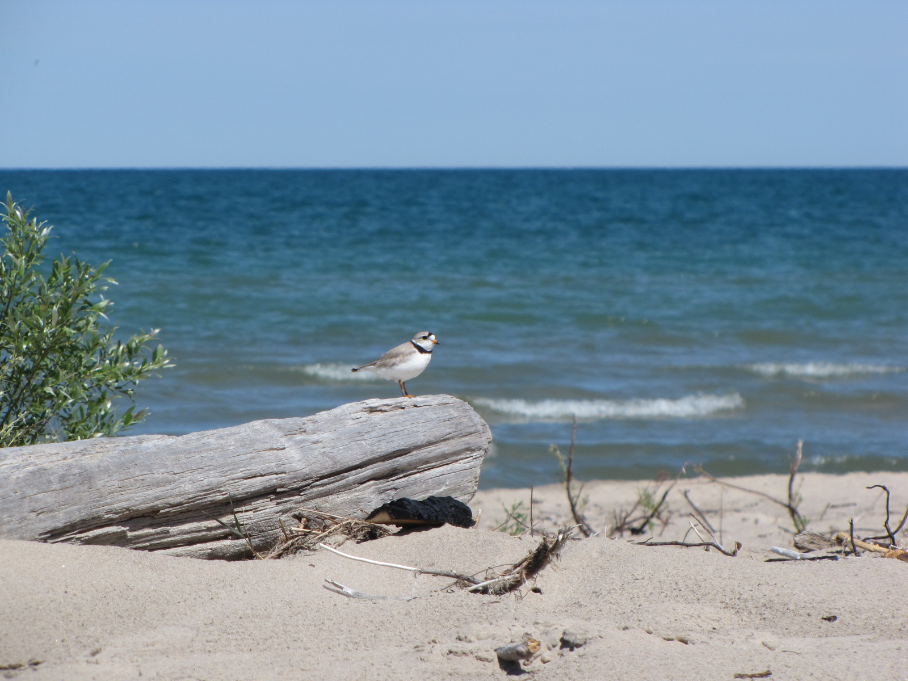
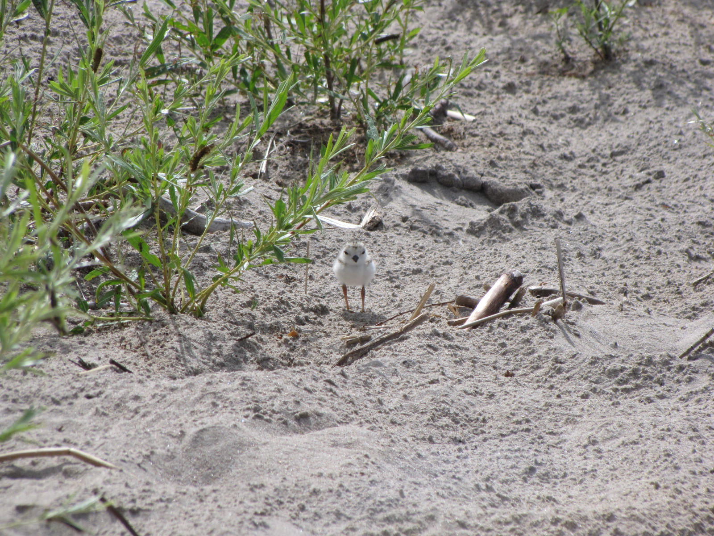
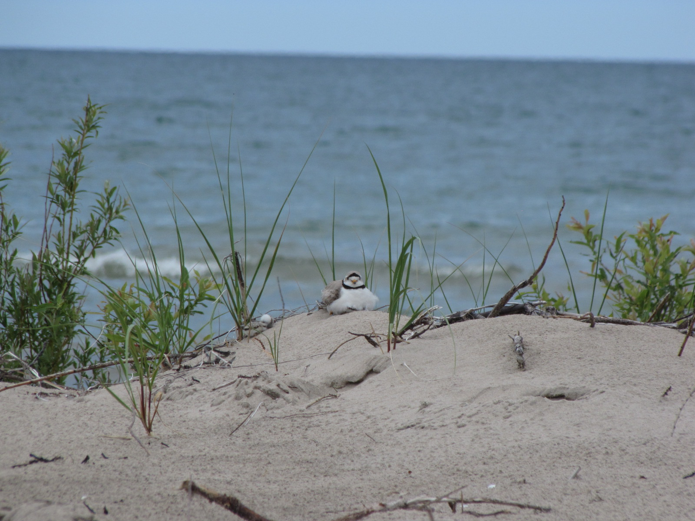
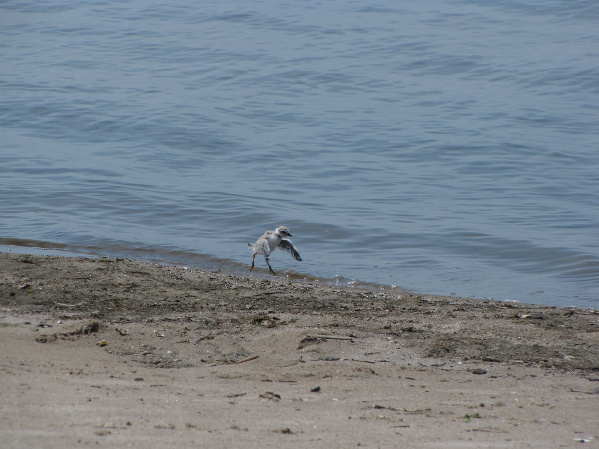
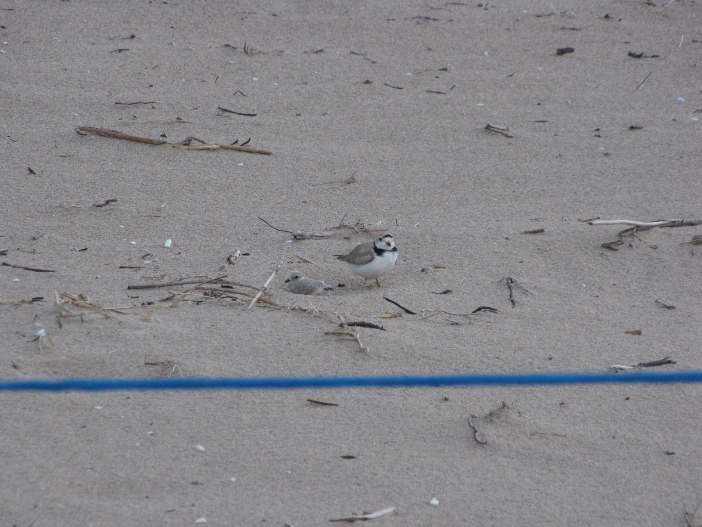

The Piping Plover is a small endangered migratory shorebird that nests exclusively on sandy beaches in North America. There are three distinct populations that do not overlap, one in the prairies, one in the atlantic provinces and one around the Greak Lakes. For the most part, these populations do not interact, which means that the destruction of one population means exterpation in that area. Worldwide, there are estimated to be between 6000-7000 Piping Plover individuals, but in 2021, there was around 74 nesting pairs in the Great Lakes Region. Piping Plovers are closely related to Killdeer, but nest and forage exclsuively on sandy beaches. The popularity and overdevelopment of sandy beaches has lead to a sharp decline in Plover populations, with the Great Lakes population previously decimated to only 12-13 pairs on isolated beaches in 1977. Since then, conservation programs have worked to protect nest sites to help boost the population and provide public education about Piping Plovers.
  In late April- Early May Piping Plover's return from their annual migration to nest on northern beaches. Piping Plovers jump from beach to beach looking for a partner (not easy when you are an endangered species!), and when they find a suitable partner will display courtship behaviours and begin to nest. Male Plovers will dig countless scraps (small depressions in the sand) and invite the female to check them out. When the female is satisfied with the location and quality, she will lay up to 4 pebble coloured eggs. Both parents take turns incubating the eggs, and they continue to incubate for around 27 days. Piping Plover chicks are precocial, which means they hatch with plenty of fuzz and are ready to run around and forage for themselves within a few hours of hatching. While the chicks can run around, they cannot fly and are protected by both parents. Parents will defend them from gulls, lead them to good foraging spots and brood (cuddle) them to keep them warm. Chicks take around 23 days to be able to fly, but will stick around on beaches for longer to pack on fat reserves for their trip south. Most Piping Plovers leave their nesting grounds by August, with the females usually heading back first followed by males and then chicks. Then in spring, the whole cycle repeats!
 In my capacity as a Piping Plover Technican for Birds Canada I completed a variety of tasks including: